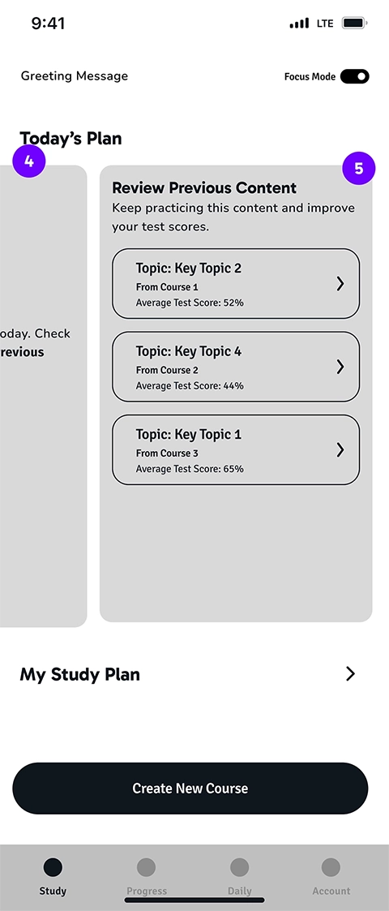
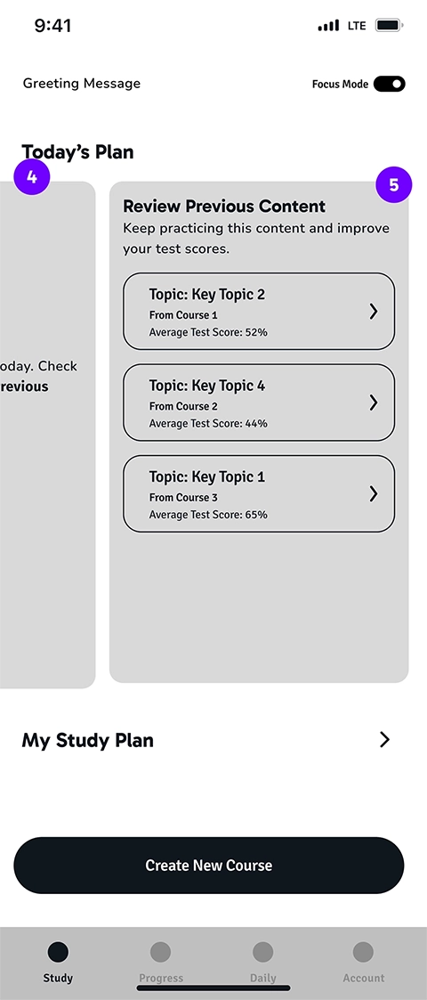
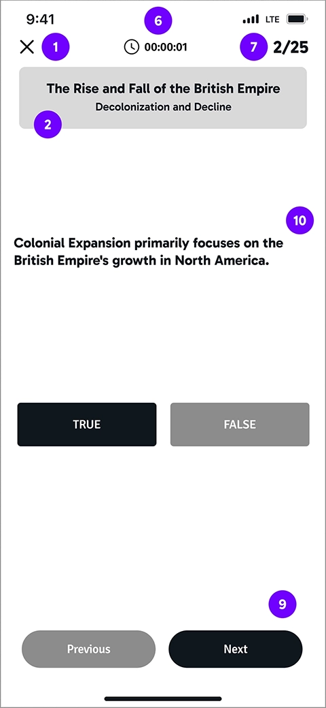
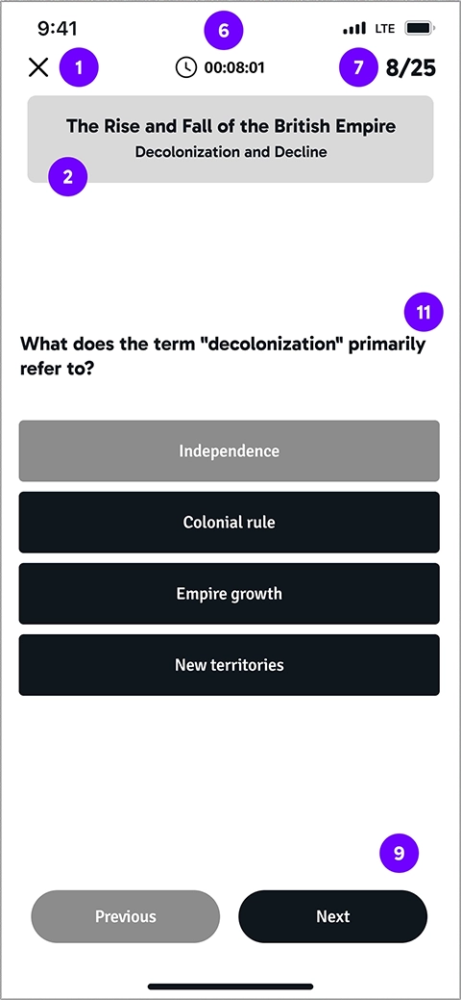
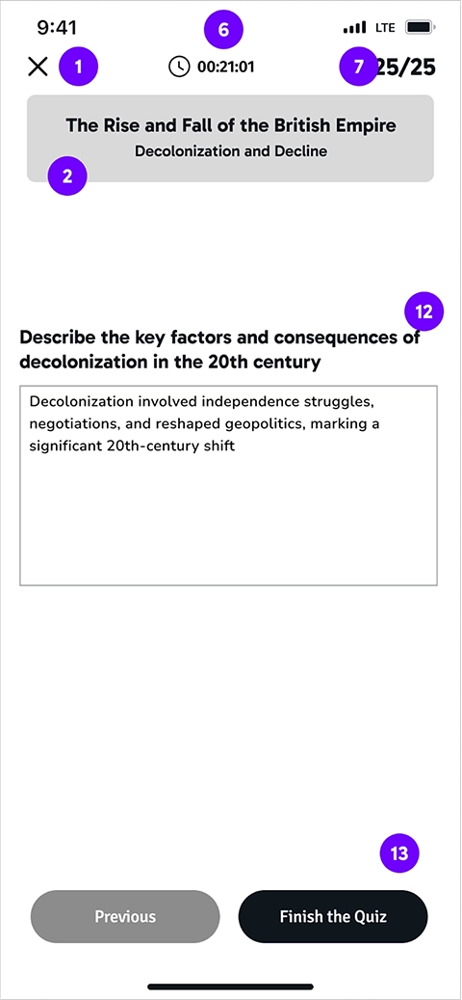
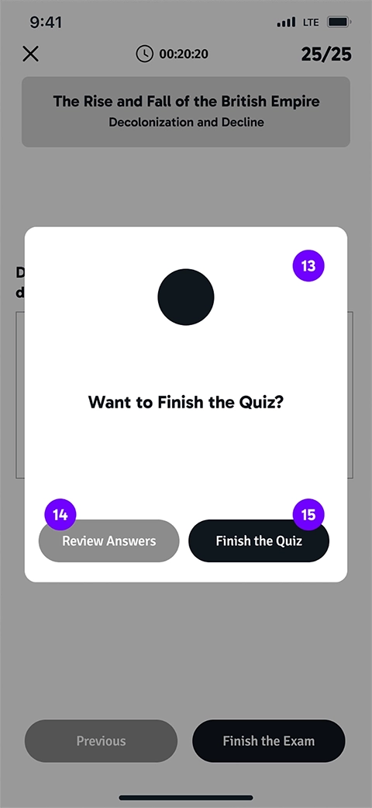
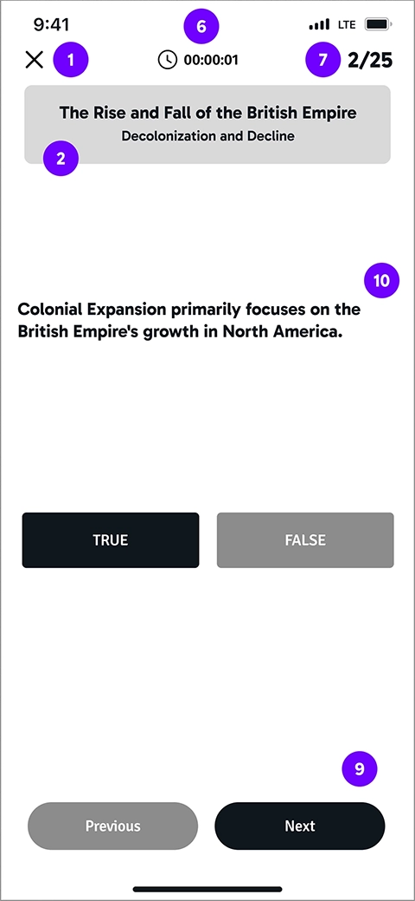
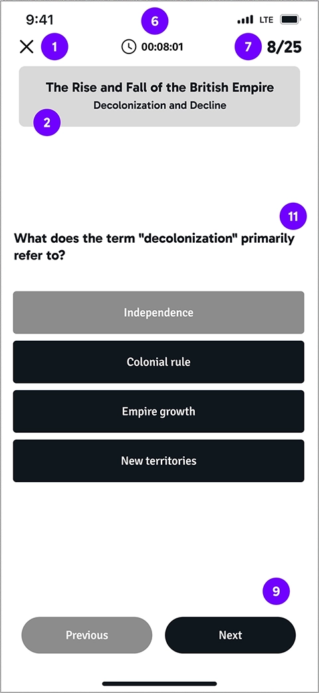
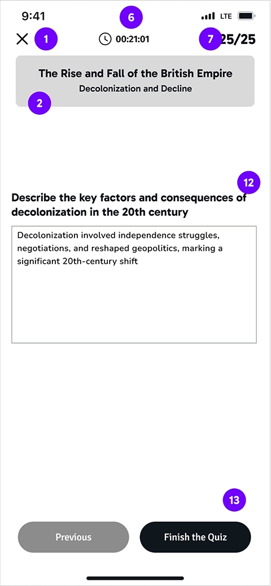
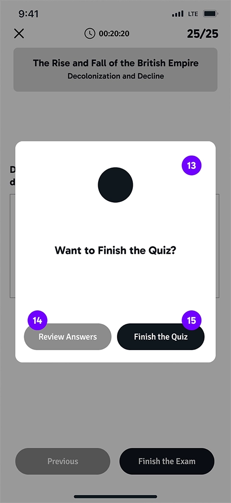

Learnium
Academic Capstone
Overview
Learnium is an AI-Powered mobile app in edTech industry. Learnium simplifies the learning process by transforming textbooks into interactive content, provides a dynamic learning schedule, and keeps learners engaged in practice and tests by rewarding their progress.
www.learnium.app-
 Mission
Mission
TTo conceptualize, research, design, and develop a Native Mobile Application for the capstone project as the final step in our academic journey. The essential requirement was creating an MVP utilizing cutting-edge technology.
-
 Hats Worn
Hats Worn
Performed user research & market analysis & clustered data, crafted persona & user journey, created user flow & wireframes, moderated usability testing & UX writing, contributed to UI design ideation, designed proposal, performed photography.
-
 Tools
Tools
Adobe Illustrator, InDesign, Photoshop & Figma for Design - Google Forms for Survey - Jira & Slack for communication and PM
-
 Timeline
Timeline
13 Weeks (Fall 2023), from Ideation to Presentation
-
 Team
Team
4 UX/UI Designers
4 Full-stack Developers -
 Platform
Platform
Android Mobile Application
IOS Mobile Application
Empathize
In today’s fast-paced world, the demand for efficient and effective learning solutions is higher than ever before. However, “Passive learning” is still the dominant way of learning new topics for most people, whether it’s by reading a book, watching a video, or listening to a podcast. The problem is that it doesn’t result in the best understanding of the topic and the learner cannot memorize key information. Better results can be achieved through “Interactive learning” where learners have opportunities to practice the knowledge with quizzes or flashcards, see their progress and areas of improvement, and customize and research for further content. But this approach is a real hard work.
In an extensive research involving 300 million students around the world, Professor John Hattie of the University of Melbourne has evaluated 252 variables and their effect sizes related to student achievement. Hattie was curious about which variables would have the biggest impact. ”Although almost everything we do improves learning, why not prioritize the ones that will have the greatest effect?” Hattie calculated a score or effect size for each according to its impact on the students’ learning and took into account any aspects that could be taken into account as regards implementation costs. In this list, around half of the variables have Potential to accelerate or considerably accelerate student achievement. We have been focusing on some of these variables in our project, which we combined with user interviews result to come up with the application’s features.

User Research
User Interview
To gather qualitative data about the users, we conducted a user interview process. Our main objective was to identify our user persona, their pain points, goals, and stories. We began with a pre-assumption of the user’s demography and categorized the users into three main learner types: high-school students, college or university students, and professionals who are studying for a career shift or promotions. We designed the interview questions to gain a deep understanding of our users’ needs, frustrations, and goals in the following areas:
- What are their frustrations when studying topics that require reading and memorizing?
- What method of studying works best for them?
- How do they keep engaged in learning a specific topic without getting bored and quitting?
- How do they ensure that they are competent after studying a topic?
- How do they prepare for an upcoming exam?
- What assistive methods do they use to learn more efficiently?
Interpret & Analysis
We conducted and recorded nine user interviews and analyzed the answers using the thematic method in which we reviewed the answers, summarized key points, categorized and clustered them to define themes. This helped us to identify the key pain points and goals of our users and led to defining user persona and main features that meet the needs of our users and address their pain points.
Import text from image(OCR)
Import text from PDF
Import through copy/paste
Process imported material
Organize content as topics
Flash card & summary
Chatbot
Focus mode
Listen to short notes(?)
Generate quiz
Scoring system
Repeated testing
Question types
Dynamic schedule
Progress for each topic
Positive reinforcement
Timely progress
Gamify
Positive reinforcement
Daily challenge
Group study(?)
Survey
In another research, we designed a survey and gathered answers from 40 college and university students. The purpose of this survey was to modify the quiz feature where we asked the questions in the following areas:
- Frequency of taking quizzes or practice questions when preparing for exams
- The optimal number of questions in the learning apps
- Relationship between the difficulty of the exam material and the number of questions in a quiz
- Types of regular academic tests(MCQ, Written, True/False, Other)
- Relationship between taking quizzes/practice sessions and competency
Persona
Keeping up with all coursework and extracurricular programs is a challenge. I need help to balance my schedule and get better results.
24 Years Old
Highlights
- Education: Third-year bachelor’s student in Art History
- Cultural Status: A second-generation immigrant who likes to study her mother language to keep in touch with her cultural roots.
- Learning Environment: Primarily studies in a quiet and organized home environment. However, she spends long time commuting to school or work and she prefers to study during this time.
- Learning Style: Learning Style: Visual learner who prefers interactive and visually engaging content.
- Learning Goals: Her short-term learning goal is maintaining a high GPA and her long-term goal is pursuing a career in art curation or museum management.
- Tech familiarity: Tech-savvy in using different apps and websites to improve her learning process.
Applications
 Duolingo
Duolingo- Quizlet
 Chat GPT
Chat GPT Notion
Notion
Core Needs
- Motivation: Ava requires a learning platform that inspires her to excel in her studies. Personalized progress tracking and achievement recognition are essential to keep her motivated and driven to succeed.
- Focus: With a busy schedule balancing school coursework and online language classes, Ava needs a learning environment that helps her maintain focus. So, a distraction-free interface is crucial, as well as tools that allow her to manage her time effectively, set study goals, and track her progress.
- Reliable Source: Ava needs a learning platform that offers accurate content. This ensures she learns with confidence and avoids incorrect information.
- Tech-Assisted Learning: Ava is comfortable with digital tools. She looks for features such as interactive lessons, multimedia resources, and adaptive learning experiences that help her grasp concepts efficiently.
- Clarification: Ava needs a platform that clarifies complex concepts and resembles an instructor in her learning process.
Frustrations
- Time management: Ava finds it challenging to manage her time efficiently and create a life balance due to packed academic and extracurricular schedule and her part-time work duties.
Market Research
While there are existing e-Learning platforms and tools, “Learnium” differentiates itself through its unique combination of features:
AI-Powered Content Generation
Few competitors offer AI-generated quizzes, flashcards, and summaries from user-uploaded content.
Structured Learning Material
Learnium identifies key topics in an imported material and based on that creates learning sessions for the user. This feature brings a school-like structure to the learning experience and simplifies acquiring process and is unique to Learnium.
Dynamic Study Plan
Learnium tailors study sessions to user’s learning preferences and upcoming exam dates. The study plan is responsive to the learner’s progress and quizzes results and covers everything that learner needs to practice for achieving a certain result. This feature is unique to Learnium as well.
AI Assistant
AI Assistant is a chat bot which searches for the answers only through the imported material to ensure reliability. Whenever the learner has questions or needs clarification on the coursework, the AI Assistant provides detailed and insightful answers, often accompanied by clarifying examples, allowing user to grasp complex concepts with ease. Among the existing applications, only Learnium offers this feature
Focus Mode
It temporarily silences notifications, adjusts screen settings for optimal readability, and provides a distraction-free environment for deep learning. Only Learnium offers this feature to maximize the learning efficiency.
Progress Tracker
Learnium uses the results of the quizzes to show which areas user did well and which areas need improvement. It also keeps a track of the learning progress in specific courses and key topics. Other existing applications also provide this feature in different forms.
Motivation Factor
We designed Learnium to be an engaging and motivational application. Learnium’s mascot, Dr.Lumi, appears on different screens with relevant and motivational messages to encourage learners to strive for better results. Daily challenge is another feature that is designed to keep learners engaged in learning, even when they’re not actively studying. All other competitor have a method to keep the users engaged.

Main Features
To define the main features and their functionalities, we organized and analyzed the gathered data from user interviews, surveys, and competitor research. Then, based on the user persona and their needs and frustrations, we defined the main features in design meetings.


Then, through the meetings among members of the design and development teams, we communicated the UX design decisions to the developers to form a shared understanding of the user perspective and product features. It led to modifying the features that not only are required for an optimum user experience but also are feasible considering technical and time limitations.
Interactive Content
Creating interactive content in Learnium is possible through uploading PDF, pasting text from other sources, taking photo of the book pages and using OCR technology to turn photo into text. Leveraging Generative AI,Learnium scans through imported material and generates the key topics that user needs to practice in each learning session. Key topics include three specific modules; quiz, flashcards and summary. These tools align with the content, ensuring accuracy and relevance, and integrate to create a “Structured Learning Material”.

Dynamic Study Planner
Learnium tailors study sessions to user’s learning preferences and upcoming exam dates. The study plan is responsive to the learner’s progress and quiz results and covers everything that the learner needs to practice to achieve a certain result. While Fixed schedules don’t adapt to individual needs. This feature solves this problem by dynamically adjusting schedules based on content, exam date, and quiz performance, reducing overwhelm or boredom.
Progress Tracker
Tracking progress is critical for personalized learning and improvement. Learnium uses the results of the quizzes to show which areas learners did well and which areas need improvement. This feature also keeps track of the learning progress in specific courses and key topics. The app focuses on how well learner performs on quizzes and allows them to take more quizzes on the topics to reach a certain competency level.

AI Assistant
AI Assistant is a chat bot called Dr.Lumi which searches for the answers only through the imported material to ensure reliability. Whenever the learner has questions or needs clarification on the coursework, Dr.Lumi provides detailed and insightful answers, often accompanied by clarifying examples, allowing the learner to grasp complex concepts with ease.

Daily Challenge
Learnium’s daily challenge feature serves a dual purpose for learners. Not only does it help them maintain knowledge retention, but it also brings them back to the app consistently, even when they’re not actively learning. In other words, it transforms their free moments into opportunities for productive learning.
User Flow
The user flow consists of four flows. The first flow allows user to import material and set a due date for that material. In this flow, we also considered proffessionals and casual users who don't want to use the study planner. The second flow, study, is dedicated to the methods that learners can interact with the leraning content. It also provides a dynamic study planner which is responsive to the changes in due dates and content volume. The progress flow shows the learning progress, both topic-based and time-based. And the last flow is daily challeng which helps users recall the past learning materials.
View on Figma
Wireframe Iterations
After confirming the user flow in the team meetings, we created the wireframe through multiple iterations. In some sections, we noticed that the wireframe needed to be changed for a better user experience. These changes led to changes in user flow, as well. In the final version, we added annotations for the developers to prevent confusion and maximize efficiency.
Based on the user flow and modified features, the wireframes are categorized as followed:
- Create New Course & Access Permissions
- Study (Home Screen)
- Material & Editing
- Key Topic & Editing
- Summary & Flash Cards
- AI Assistant
- Quiz and Result
- Check Progress
- Daily Challenge
- Profile
Study Flow (Home Screen)
This is the first page that the user views, after logging into the application. For a learner who's been using the app for a while and imported content, the learning schedule is shown as Today's Plan. It consists of three sections:
- New content that is planned to be learned today
- Missed content from previous days which is content that the user hasn't started yet
- Review includes content that the user hasn't got an average of 80% or more in the taken quizzes
In the first iteration, we wanted the user to be able to see all the content categories at a glance. That's the reason we incorporated Next Days’ Plan, Recent Materials, All Folders, and Create New Learning Material on the same page as Today's Plan, as followed:


In the user testing, we noticed that this design confused the users and they couldn't find the main intended actions on the page. Therefore, in the second iteration, we removed all unnecessary sections from the home page to help the user focus on the most important action on the page which is starting the Study.
 

Annotations
- The character and greeting message
- Turns on and off the focus mode
- Missed content includes the key topics which are not completed at scheduled time. The user sees this part of carousel when there is at least one missed content
- Today’s content includes key topics that are planned for today. If missed content is empty, the user sees this part of carousel when opening the app
- Review content include the key topics that user has already taken quizzes for, but the average score is below 80% and it means the key topic isn’t completed yet and needs to be reviewed. If there’s no missed content and today’s content, the user sees this part of carousel when opens the app
- Open page 6 to view all future and completed key topics
- Takes the user to the “upload content” page
Quiz and Result Flow
In this flow, learners can set up the quiz's question types and then take a quiz. Based on the survey results, the number of questions varies between 15 to 25, considering the topic volume.

 







Annotations
- Takes user back where they come from and opens pop-up 1
- Name of course and key topic (if this test is for course, it means it’s a comprehensive test and only name of course appears here)
- The initial condition of focus mode in this page is what the user already has set on the home page. It can be toggle on/off here as well
- Choosing the type of questions that user want to answer. At least one must be toggled on. All of them can be on.
- Starts quiz
- Timer takes the time of exam. Time is not limited
- Number of current questions comparing the total number of questions
- First form of true/false question. It’s similar to flash card
- After answering user has to hit next to go forward. They can go backward to check previous questions as well. On the first question, back button takes user to quiz set up
- Second form of true/false question
- Multiple choice question
- Written question
- This button appears on the last question to give a hint this is the final question. After hitting, the pop-up 13 opens up
- Goes back to the final question
- shows the result, page 15
- Goes to the home page
Reflections
Lesson Learned
- Remaining open to feedback:
Listen to feedback; it can be like a spark for new ideas, even if it's not the perfect solution for the current challenge. Don't take criticism personally, see it as advice for your work, not you as a person. Being open to feedback helps your work improve, while is an opportunity for personal growth. - Iterative design:
There's no perfect solution for a design challenge because users may have different mental models. Each solution has its advocates and critics. However, the key lies in the process of iterations and testing. We faced this challenge in the design of the flashcards, when different users had differnt expectaions while testing the app. The final design is a result of this ongoing process, shaped by feedback and user testing, ensuring that it not only meets the needs of the audience but also stands up to the diverse perspectives it might encounter.
If We Had More Time
- Serivng a wider range of learners:
In the project kick-off session, we discussed about people with special needs and how text-to-speech feature can simplify the study process for them. Later we needed to narrow down the project scope and this feature was pushed to the extension plan. However, I believe to make an accessible app for a wider range of learners such as people with dyslexia, this feature should be implemented. - Study group:
Following the user interviews, we found a common pattern among some of the interviewees who prefer to study in groups and the competition among the group motivates them to push themselves. However, since adding this study group feature would widen the project scope dramatically, we pushed it to the extension plan.